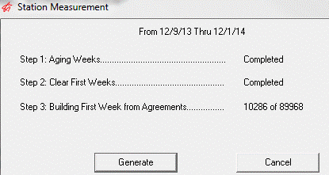
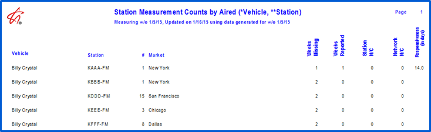
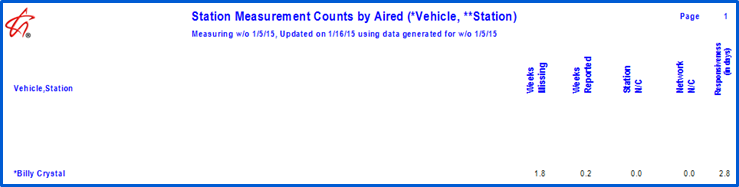

Affiliate Measurement
The Affiliate Measurement utility is a standalone background program that runs at a designated time at least once a week. The utility amasses compliance information that is stored in the Affiliate Measurement file. The file contains 52 weeks of information for every Vehicle/Station Agreement in the system.
The utility can be used to determine:
- The rate of delinquency for the entire database as of the generation date
- How the current delinquency rate compares to past delinquency rates
- Whether affiliates are improving or declining in submitting their posts
- Seasonal fluctuations or trends in delinquency
- Predictable delinquency factors, meaning, are there certain vehicle characteristics that resulting higher delinquency rates? i.e. vehicle formats, group owners, geographic location, size of market, agreements sold by certain Affiliate A/Es, etc.
- Whether these factors are improving or worsening
- The effectiveness of network Affiliate Compliance personnel in their stations non-delinquent
- Those personnel that have had the greatest improvement in their stations’ becoming non-delinquent
- Measuring the success of various methods to control delinquency
Setup
Manual Setup
The utility can be set to run automatically, or be generated manually by creating a shortcut.
Point the Target to the Affiliate Measurement Exe, typically located in the CSI\Prod\Exe folder. Add a “ /UserInput” at the end of the Target line to manually generate the utility. The Start In must point to the location of the Traffic.ini, typically CSI\Prod\Data.
Automatic Setup
You can set the utility to run automatically through Windows Task scheduler or using CSI Server.
Open the CSI_Server.ini in any text editor and add AffiliateMeasurement to the list of section names.
Example:
SectionNames = GetPaid, Backup, AffiliateMeasurement
Add the AffiliateMeasurement section to CSI_Server.ini file:
[AffiliateMeasurement]
Enabled = 1
WeekDays = 1111111
StartTime = 2:00am
Interval = 86400
Exe = D:\csi\prod\exe\affiliatemeasurement.exe
StartInFolder = d:\csi\prod\data
CommandLine =
KeepProgramRunning = 0
Edit the Exe and StartInFolder paths as needed (the StartInFolder must point to the location of the Traffic.ini and Affiliat.ini files.)
Running the Utility
To manually run the utility, double click on the shortcut and click Generate. You will see 52 weeks of data displayed across the top. This week span is your system date – 52 weeks, and cannot be altered.
As the utility is processing, the first two steps will indicate whether the Step has ‘Started’ or is ‘Completed.’ The third Step will display a progress counter.

Affiliate Measurement File
The utility creates a record for each station/vehicle and captures six values that are updated each time the utility is generated. The file contents are as follows:
Week One Start Date
Network Name
Vehicle
Station
Affiliate Sales Rep
Affiliate Service Rep
Delinquency Index (52 weeks) where Week 1 = last week, (going backwards for 52 weeks)
Each week contains the following values:
- # weeks aired in last 52 weeks
- # weeks missing in last 52 weeks
- # spots posted in last 52 weeks
- # Station Non-Compliant Spots
- # Network Non-Compliant Spots
- # Station Responsiveness
Week Values
The six values are updated by a set of calculations each time the utility is generated.
1. # Weeks Aired in the Last 52 Weeks
To arrive at this number, the utility tallies the number of weeks within the last 52 week period that the station carried the vehicle.
When a new agreement is created, 1 is the first week of the agreement. The number increases each week until it hits 52. It will remain 52 until the agreement is canceled, and then it drops by one number each week until it hits 0.
2. # Weeks missing in the Last 52 Weeks
To arrive at this figure, the utility looks at the number of weeks in the last 52 week period that are missing affidavits from the stations. A partially posted week is considered missing.
Outstanding weeks are included in this count until they exceed of 52 weeks in the past.
The utility also subtracts the total of missing weeks from the number found in value 1, to find the number of weeks that received affidavits in the last 52 week period.
3. # Spots Posted in the Last 52 Weeks
This value is the total number of spots that have been returned/posted to the network.
4. # Station Non-compliant Spots
To determine the number of spots that are not station compliant, the utility adds all of the missed spots that were not madegood to the number of spots that were aired differently than how they were pledged to air. Conversely, subtracting this sum from the total found in value 3 will provide the number of station compliant spots.
5. # Network Non-compliant Spots
To determine the number of spots that are not network compliant, the utility adds all of the missed spots that were not madegood by the station to the number of spots that were aired differently than how they were contracted to air by the network/agency. As with #4, subtracting this sum from the total found in value 3 will provide the number of network compliant spots.
6. # Station Responsiveness
This value captures the station responsiveness, which measures the average number of days between the date on which the spots aired and the date the spots were posted. For example, if a station’s responsiveness was 1, they would be posting their spots the day after they aired, a 7 would mean it takes them a week to submit their posts. A low number indicates prompt posting, while a higher number means there is a lag in posting time.
Affiliate Measurement Report
The Affiliate Measurement report is used to measure affiliate compliance and delinquent rates. The report displays the measurement figures obtained in the current week the utility was generated in, for the date requested.
Calculations
The report follows formulas on this grid to arrive at its figures:
|
Report Options -🡪 Report Columns |
Counts by Aired |
Percent (Pct) by Aired |
Percent (Pct) by Year |
|
Weeks Missing |
# of weeks Missing |
# of weeks missing / # of weeks aired |
# of weeks missing / 52 weeks |
|
Weeks Reported |
# of weeks aired - # of weeks missing |
# of weeks aired - # of weeks missing / # of weeks aired |
52weeks - # of weeks missing / 52 |
|
Station Non-Compliant |
# of Station Non-Compliant spots posted |
# Station Non-Compliant spots posted /total # of spots posted |
# of Station Non-Compliant spots posted /total # spots posted |
|
Network Non-Compliant |
# Network Non-Compliant spots posted |
# Network Non-Compliant spots posted / total # of spots posted |
# Network Non-Compliant spots posted / total # spots posted |
|
Responsiveness |
# of weeks aired x 7/ # unique days submitted |
# of weeks aired x 7/ # unique days submitted (no percent) |
# of weeks aired x 7/# unique days submitted (no percent) |
Exclusions from Report Calculations
There are two types of agreements that are excluded from Affiliate Measurement calculations: Manually Posted agreements and Service agreements.
- Affidavit Control Manual: Agreements set to be manually posted in the Agreement -> Delivery screen will not be included since the network posts the affidavits.
- Service Agreements: Agreements that have the “Service Agreement” setting set to Yes will be bypassed.
Selectivity
Information can be displayed by aired counts (# of weeks, # of spots, etc.) or by year or aired percentages (aired percentages are arrived at by dividing the 6 measurement values by the number of aired spots and year percentages are arrived at by divided the 6 values by 52).
There are optional major and minor sorts, which can include applicable page skips, minor sorts can be sorted in ascending or descending order. You can choose to run the report in a detail or summary version, and decide whether to include or exclude Network Non-Compliant Station, and/or Responsiveness in the calculations, as well as whether to display internal counts stored in the Affiliate Measurement file.
This example shows the detailed Counts by Aired, breaking out information by station:

While this is the Summary version, which shows one line of information per vehicle:
